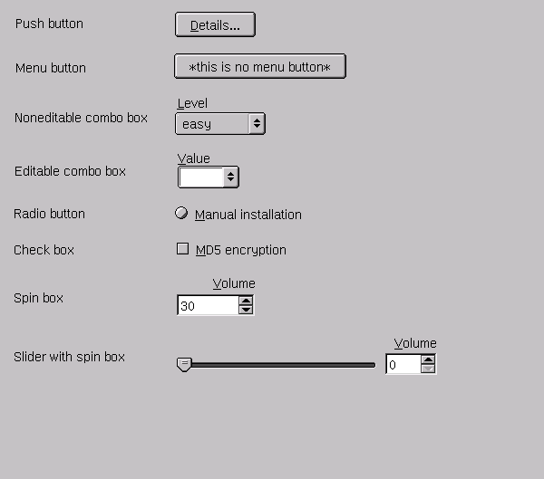
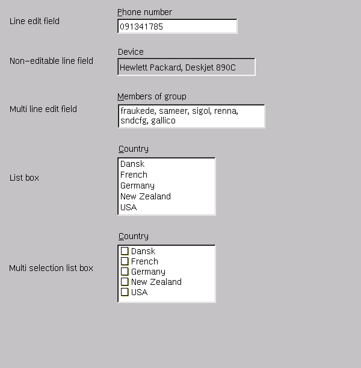
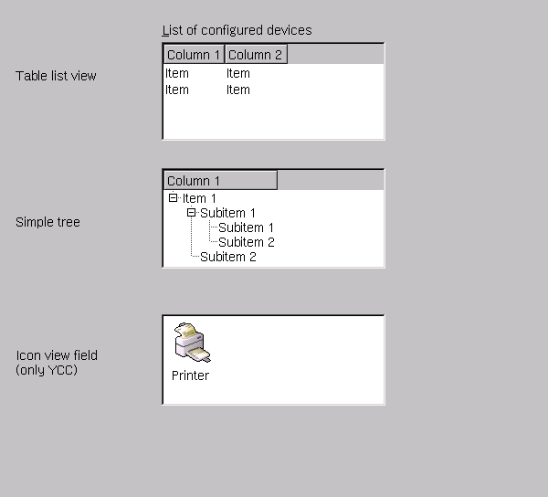
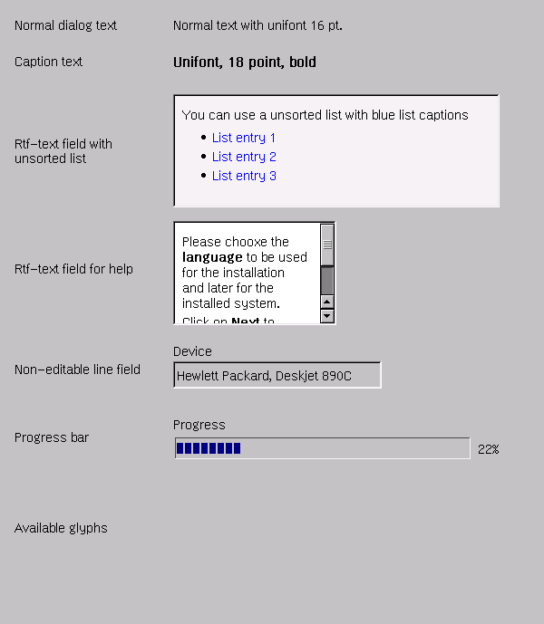
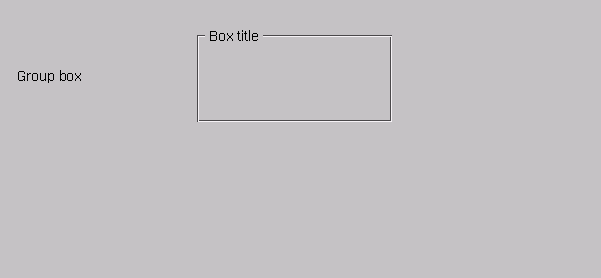
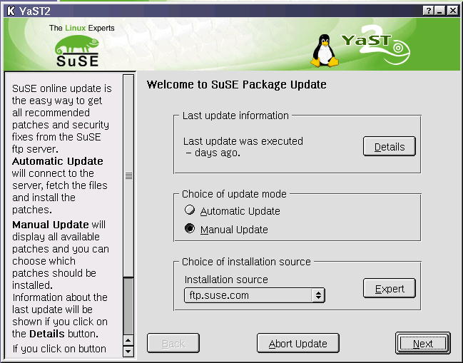
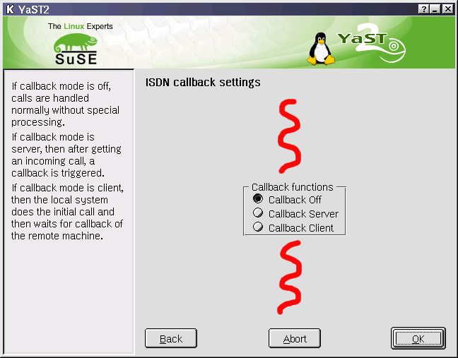

[previous page] --- [back to index] --- [next page]
[previous
page] --- [back to index] --- [next
page]
It is difficult to sort the elements, but you can make some differences

Minimum width of a button is ***.
If there are more buttons in a row, try to make the width of all buttons equal. Be aware of other language, e.g. German and especially French is more wider than English.
Be aware of Ncurses and the translation of the button name. In most cases 4 buttons are the maximum number in the 640 x 480 dialog.
The maximum number of rows of buttons should be two if possible. If you need more, try another desgin or split the dialog into main dialog an pop up boxes with additional functionality.
Separate main navigation buttons (Back, Abort and Next/OK/Finish) from the other dialog elements with a (fixed) space.
The button that represents the command the user most likely will choose is the default button. If the button will start a critical action, an alternative button (e.g. Cancel) is default. The default button will be activated by Return (Enter).
Try to use the standard naming and standard short cut keys as described in chapter 4.x *** Link***.
Reserved names:
Back ***
Abort ***
Next ***
OK ***
Finish ***
Not used but some information in chapter 4.x***: Apply***
Use active speech to name a button.
Use a single word, a verb if possible, to describe the action the button will start.
Use sentence styled capitalization if you need more words
Put three dots after the name of the button if a dialog box or an expert dialog page will pop up. Do not use a space between the last letter and the dots. You do not need the dots if only an information pop up with OK will pop up.
Use horizontal alignment to line up buttons, avoide vertical line up.
It's clear, try to avoid more than two multiple rows or columns with command buttons. Multiple rows are preferred to multiple columns.
Message boxes: Put the OK button first, Cancel second, Help at the end.
If there is a Cancel button, it should make a real cancel. If you cannot bring the system back to the status before, use Stop for the caption.
All buttons need an explanation in the online help.
This point needs a discussion: Disable invalid command buttons instead of giving error messages. Never have enabled commands that will result only in an error message.
Always use ellipses to indicate more information is required An ellipsis in a command indicates that more information other than a simple confirmation is required to carry out the command. An ellipsis does not mean that a dialog box follows.???
The menue button is a compromise, try to avoid it.
The menu button is a complex dialog element! Use it seldom, and use it in expert mode only. The available commands are not visible!
The menu button has a short cut key.
A combo box has a label with no ending punctuation and a shortcut key.
Reduce the maximum number of items if possible, avoid force to scroll in the list!
If there is enough space, think about radio buttons instead.
See non-editable combo box for hints.
The editable combo box gives user the chance to key in an individual text or value. But it also provides some predefined settings.
The problem: the predefined settings are not visible.
Radio buttons normally represent a set of exclusive choices, sometimes depending on each other. You have to group them. Use a group box to do this. A single radio button is a bug, use a check box instead.
You will need at last two radio buttons in a group.
Normally do not use radio buttons for On/Of, Yes/No choices. The exception is – you want to focus the user to the possibility and make a quick setup possible. The example below shows, that the solution with radio buttons for the decision switch Firewall on or off is more ***ersichtlich*** than with a check box.
Firewall: o On o Off
[ ] Activate firewall
It is difficult to anticipate the users maximum mental workload, but do not use more than 7 radio buttons in a group. If you are forced to do so, think about a method to create lower level groups. The alternative is to use a combo box.
Vertical alignment is preferred.
No ending punctuation.
Use check boxes correct: check boxes turn on and off options, radio buttons change the mode.
A check box can stand alone, check boxes are independent by each other.
There is a maximum number of check boxes do not use more than 7. The alternative is a multiple selection list.
Consider putting related groups of check boxes in a group box.
Arrange check boxes in a vertical alignment if possible.
No ending punctuation

The
non-editable line field has no manipulation possibilities
Always give a line edit field a a label. The YCP forces a label at the top of the box.
Use alignement with other elements, try to equal the width of line edit fields if possible.
Use it, if necessary. If less interaction possibilities are left, think about radio buttons, check boxes, drop down lists, spin boxes.
Provide a date picker for time an date.
If possible, set the width of the text box to the expected length of the input.
* Drop down list boxes have a label as identifier and explanation.
Try to reduce the amount of list entries.
Provide 'select all' and 'deselect all' if using this dialog element.
* List views should have a label with shortcut key.
* Think about a sort option if there are a lot of entries in your list. Perhaps then a table list view would be Scroll bars
Note: You will have a minimum length of the list to get usable scrollbars


Avoid abbreviations.
Format the text by relevant information content.
Do not use uppercase or lowercase letters.
We decided to use 'Sentence like capitalized text' for the all captions and labels.
Avoid semicolons, exclamations, points, parentheses, brackets, bold text...
Use the normal gray background for your text information concerning the use of the dialog elements.
Free text label is used to display additional information to the user. Group it, align it, left-justify it.

If possible, use group boxes to group related dialog elements.
Avoid to use a group a single dialog element.
Avoid to repeat the label of the group box in the labels of the dialog elements in the group box.
If not possible to use a group box be sure that there is enough space between different groups of dialog elements.
* Do not use colons at the end of the label text of the group box.
Good example

SuSE
Linux 7.2 You module
Bad example

Choosen style is Platinum.
Does the module have the 'look & feel' of a YaST2 program?
Does the module provide a recognizable feedback, that something is working after a command? Can the user see the estimated duration of the task?
Does the module provide well designed warnings about real critical actions?
Are there too much warnings?
Is there the chance to do an 'Undo' or to abort the action?
Are the possible command functions
Do you use progressive disclosure, as appropriate?
Keyboard access to all features with consistent shortcut keys [***shortcut key even to all tables (= key short cut in table label)]
* Due problems with translation give a second chance to select or activate a dialog element by keyboard – using tabs.
Mouse access to all features with less clicks!
(Eventually later) Use the right mouse button only for context menus, not for any other purpose.
Avoid horizontal scroll bars. Scrolling is undesirable because it makes it difficult to read an item. As an alternative, try to use a vertical scroll bar, make the window wider, shorten the text, or wrap the text instead. Of course, use horizontal scroll bars if you really must.
* Activities with consequences require explicit selection from the user. The user needs to be fully aware that he is about to do something dangerous or destructive.
* Feedback for all time-consuming operations. The user should be able to cancel lengthy operations. Label the button Cancel if canceling undoes the operation, otherwise label the button Stop.
YaST2 should use a single document interface.
(General in applications) Use Exit to quit a program, Close to remove primary windows and modeless dialog boxes, and Cancel to remove modal dialog boxes. Use Close instead of Exit for primary windows when closing the primary window doesn't imply terminating the process. For example, closing a printer status window doesn't cancel the outstanding print jobs.
Use the same term to describe the same thing.
Fine defaults are a way to the heart of the untrained user. Try to find the most commonly used setting.
* Consider safety when selecting default values Irreversible or destructive actions should never be the default. Never use a default value that would surprise the user.
Use SVGA mode 800 x 600 for a first draft for your layout and then look at VGA mode 640 x 480 and Ncurses. All dialogs have to be usable for Ncurses text mode 80 x 25 items.
* Make modal dialog boxes modal. *** Needs more description ***
* Do not make dialog boxes scrollable. Find another design.
* Do not use menu bars in dialog boxes used as secondary windows
Menu buttons are acceptable, but try to avoid them if possible.
Try to be consistent in the use of controls. Similar main functions should have a similar use.
Set the initial focus on the first most likely used dialog element.
* Assign access keys to all controls that can handle such a feature.
Avoid using bold text.
(Work for later) Provide context-sensitive help with F1.
* For modal dialog boxes, always provide OK and Cancel buttons To use a dialog box, the user needs to be able to easily identify how to move forward (with the OK button) and backward (with the Cancel button). You can replace OK with a more specific command, but never replace Cancel in a modal dialog box, except with Stop to indicate that the effect of an operation in progress cannot be cancelled.
* For modeless dialog boxes or dialog boxes used as primary windows, provide a Close button but do not provide OK and Cancel buttons Using OK and Cancel for a modeless dialog box or primary window makes the dialog box appear to be a modal dialog box. Furthermore, OK and Cancel are not meaningful when used in a modeless context. Use Close instead to eliminate any confusion.
If YaST2 will use tabs, these property pages should work independently. No setting on a certain page should affect another setting on a non visible page.
Normally a property page will have their own function. First design each page independently to find an optimal lay out for the purpose. In a second run you can try to find a more similar lay out for the different property pages. But if there are very different setups, think of a different layout to make clear 'here is something different!'.
* Even, if you have only one tab, use a property page for properties.
* Use only one row of tabs. Two rows are acceptable under certain circumstances. If you have a lot of optoins, try to group them in different dialog pages.
* If you use property pages, you will need an Apply button. User has the right to experiment with settings.
* Sign the dialog with the property sheets as 'Properites of ...' or similar like this.
* It is clear, command elements for the whole dialog should be placed out of the tab page, command elements for the actual property sheet in the tabbed page.
The goal is, to make YaST2 a 'wizard'. But not to a 'normal' wizard for the absolutely untrained user that guides him in absolutely simple steps thru a setup where he can not make individual settings.
YaST2 should provide a default way with less clicks, hiding seldom used options, and where necessary and possible a side step to the full configuration of a complex device with complex options.
This point needs a general discussion!
No disabled control elements.
Allowed disabled control elements.
There is no toolbar in YaST2 modules yet. But if we will use it, a bubble help function is necessary. See next topic.
Note: We have no ballon help functionality in YaST2 yet.
Beware of Ncurses, ballon help is not possible there (yet).
Can user deactivate ballon help?
Is there a consistent use of ballon help?
Do the ballon help answer one of the following questions:
What is this?
What does this do?
What happens if I click this?
Is the ballon help short as possible and long as necessary?
Are there concise phrases and active speech in consistent terminology?
Is it necessary to provide balloon help for different states?
See chapter xxx for detailed information
To write an understandable text for the untrained user (and the expert user, too) is a real problem.
Use a 'positive' text.
Is there a cancel button where necessary?
Select the correct message box type. In most cases the default activated button is determined. Is this correct?
No question, avoid unnecessary message boxes.
Control the size of the message box. Is the last line of the text cut? Is scrolling necessary?
If you implement a help button, does the text in the help window really bring help to the user?
Work for the future: Bring the message box - we have only modal message boxes - permanently to front of the desktop
Does an alert message box provide more than 'what is wrong'? Is there information on trouble shooting? What happened? Why did it happen? What can I do?
It is clear: give a clear and well text formatted feedback about the error. Help the user!
No blaming to the user!
Avoid the word 'mistake', use 'incorrect input'. And avoid other critical words. ***link***
Avoid direct speech to the user: use 'Incorrect input detected' instead of 'you made a wrong input'.
Be brief, clear, consistent.
Use simple speech.
Try not to be funny!
A fine method: first make a black-white layout, then colorize it.
Think of the color-blind users and Ncurses: never use color as sole information for mode or values.
Note: A normal person can differ about 7 colors secure an quickly.
Is the picture or icon a real enhancement of the dialog, or is it 'only' a funny element?
Is the used icon a standardized icon out of KDE, made by 'tackat'?
Does the dialog look clear and clean, even if there are pictures and icons?
Remember, Ncurses will not have any icon or picture!
* Do not use beeping or blinking in the dialog. An exception could be a beep during the installation if a change of the CD is necessary.
Support the user's locale Date and time should be displayed in the correct format.
[previous page] --- [back to index] --- [next page]
sigi@suse.de / file: